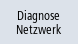

Bei Netzwerkproblemen können Sie den Datenverkehr über das Fenster "Netzwerk-Trace" zur Analyse und Auswertung als Protokolldatei aufzeichnen.
Allgemeine Angaben
-
Die Funktion ist mit dem Standardkennwort NETWORK geschützt.
|
Hinweis
|
|
Ändern Sie das Standardkennwort um Missbrauch vorzubeugen.
|
-
Das Protokoll wird durch das Programm tcpdump (Linux) bzw. windump (Windows) aufgezeichnet.
Weitere Informationen finden Sie unter www.tcpdump.org.
Voraussetzung
Wenn Sie das Kennwort ändern möchten, benötigen Sie die Zugriffsstufe 2 (Service).
Vorgehensweise
|  | 1. | Das Fenster "Netz-Status" ist geöffnet. |
 | 2. | Drücken Sie den Softkey "Netzwerk-Trace". Das Fenster "Kennwort setzen" wird geöffnet. |
 | 3. | Geben Sie das Kennwort ein und drücken Sie den Softkey "OK", um die Eingabe zu bestätigen. Das Fenster "Netzwerk-Trace" wird geöffnet. |
| | 4. | Wenn Sie Parameter in einer Datei abgelegt haben, drücken Sie den Softkey "Aus Datei", um die Datei z. B. von einem USB einzulesen. Das Fenster "Datei auswählen" wird geöffnet. |
| | 5. | Wählen Sie die Datei aus einem Verzeichnis aus und bestätigen Sie mit "OK". |
| | | - ODER - |
| | 4. | Falls erforderlich, parametrieren Sie die Aufzeichnungsbedingungen im Eingabefeld "Parameter (tcpdump)". |
| | 5. | Drücken Sie den Softkey "Start", um das Protokoll aufzuzeichnen. Hinweis: Die Aufzeichnung wird nach 20 Minuten automatisch gestoppt. |
| | 6. | Drücken Sie den Softkey "Stop", um die Aufzeichnung abzuschließen. Das Fenster "Tracedatei exportieren" wird geöffnet. |
| | 7. | Wählen Sie einen Ablageort aus, vergeben Sie einen Dateinamen und bestätigen Sie mit "OK". Damit wird die Tracedatei in den Ablageort verschoben. Bei "Abbruch" bleibt das Protokoll unter folgendem Verzeichnis erhalten: HMI-Daten/Protokolle/Netzwerktrace/tcpdump.pcap bzw. windump.pcap |
| | 8. | Wenn das Protokoll bereits besteht, drücken Sie den Softkey "Tracedatei exportieren", um die aktuelle Protokolldatei z. B. auf einem USB zu speichern. Das Fenster "Ablage auswählen" wird geöffnet. |
| | 9. | Wählen Sie einen Ablageort aus, vergeben Sie einen Dateinamen und bestätigen Sie mit "OK". |
Kennwort ändern
| | 1. | Das Fenster "Netzwerk-Trace" ist geöffnet. |
| | 2. | Drücken Sie den Softkey "Kennwort ändern". Das Fenster "Kennwort ändern" wird geöffnet. |
| | | Geben Sie ein neues Kennwort ein und bestätigen Sie mit "OK". |